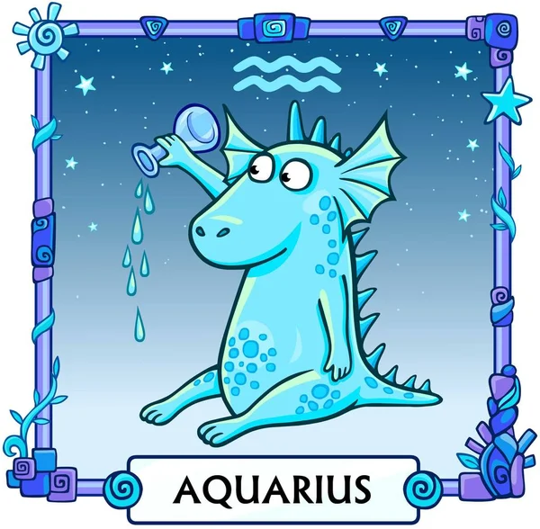

Знак зодиака человека определяют по дате его рождения. Например, люди под знаком Овен рождаются с 21 марта по 19 апреля, а Близнецы – с 21 мая по 20 июня.
О знаках зодиака лучше всего рассказывают их стихии и планеты-покровители. Кому присуща импульсивность и скорость, а кто хладнокровен и размерен в своих действиях. Почему одни люди тяготеют к точности, скрупулезности и стандартам, а другие – приверженцы новизны, экспериментов и творческого восприятия мира. На все эти вопросы, в частности, старается дать ответы и астрология.
Овен (21 марта – 19 апреля)
Стихия и планета-управитель знака зодиака Овен
Первый огненный знак и первый знак зодиака. Сезон Овна знаменует собой начало весны. Им управляет Марс, планета действия и, согласно древнеримской мифологии, Бог войны. Марс – это энергия, страсть и стремление к самосовершенствованию, что придает Овну присущую ему неоспоримую уверенность. Люди знака не только знают, что справятся с работой, но и уверены, что никто не подходит для нее лучше.
Какой характер у Овна
Из-за своей импульсивности представители знака могут попасть в неприятности, но они умеют отмахиваться и продолжать двигаться вперед.
Овны задают темп, пока остальной мир играет в догонялки. Исключительная сила их решимости и напора быстро доставляет их туда, куда им нужно.
Телец (21 апреля – 21 мая)
Стихия и планета-управитель знака зодиака Телец
Земной знак. Поскольку Тельцами управляет чувственная планета Венера, они особенно любят предаваться чувственным удовольствиям и земной роскоши.
Какой характер у Тельца
Когда вы думаете о Венере, скорее всего, – речь о любви, красоте или женском теннисе. Телец – любитель хорошей еды, изобразительного искусства и всего эстетически приятного. Богиня любви играет роль в вашей глубокой верности и преданности тем, кто вам небезразличен.
Хотя Тельцы могут быть немного упрямыми и сопротивляться изменениям, они также очень надежны и готовы закончить все, что начали.
Близнецы (22 мая – 21 июня)
Стихия и планета-управитель знака зодиака Близнецы
Воздушный знак. Это гибкие, любознательные и болтливые люди, которые хотят самовыражаться и расширять свои знания. Близнецы известны своей динамичностью, но знаки, управляемые Меркурием, имеют репутацию шатающихся туда-сюда и изо всех сил пытающихся что-то делать.
Какой характер у Близнецов
Поскольку Близнецами управляет Меркурий, планета общения, то они любят собирать и распространять информацию. Близнецы могут быть разными со всеми, кого они встречают. Они склонны к внутренней двойственности немного сильнее и менее смущенно, чем остальные.
Рак (22 июня – 22 июля)
Стихия и планета-управитель знака зодиака Рак
Водный знак, сигнализирующий о наступлении лета. Его покровительницей является Луна.
Какой характер у Раков
Рожденные под знаком Рака дома любят быть в центре внимания. По словам Рид, они сделают все возможное, чтобы защитить свои семьи и позаботиться о родных.
Чувства людей этого знака меняются так же быстро, как и контролируемые Луной приливы и отливы. Ведь Луна – планета, ответственная и за приливы и отливы человеческих эмоций. Ночной диск влияет на то, как мы себя чувствуем. А Раки могут быть более чувствительными, чем другие знаки, и больше соприкасаться со своими внутренними глубинами. Их настроение может быстро меняться.
Луна также представляет небесную фигуру "матери", влияя на Раков, чтобы они глубоко заботились о семейных узах и развивали заботливость. В связи с влиянием Луны они ищут в других именно то, что сами дают – безопасность и комфорт.
Лев (23 июля – 21 августа)
Стихия и планета-управитель знака зодиака Лев
Огненный знак, управляемый Солнцем.
Какой характер у Львов
Его пламя "превращает горение в великолепное сияние", говорит астролог Бесс Матасса. Львы здесь для того, чтобы "превратить мирское в высокий голливудский лоск". Подобно Солнцу, которое управляет их знаком, представители этого знака весьма сердечны, щедры и оптимистичны. Хотя им нравится быть в центре внимания, им также по душе приносить радость другим.
Их, казалось бы, бесконечный запас энергии – это тоже благодаря влиянию Солнца. Солнце представляет собой основные принципы нашего бытия, которые составляют то, кто мы есть, поэтому вполне логично, что Львы – самый эгоцентричный знак. Хотя это может звучать отрицательно, на самом деле это – сила. Люди знака в контакте с собой, гордятся тем, кем они есть, и не боятся петь с крыш.
Дева (22 августа – 23 сентября)
Стихия и планета-управитель знака зодиака Дева
Земной знак, находящийся под управлением Меркурия.
Какой характер у Дев
Управляемые ментальной планетой Меркурий, Девы, пожалуй, самые логичные, наблюдательные и хорошо организованные из своих земных товарищей. Девы очень практичны и любят быть полезными другим, и они знают, как твердо стоять на ногах даже в периоды непредсказуемых штормов.
Рождены для решения проблем. Влияние Меркурия на Деву выражается через врожденную способность различать, что делает ваш знак прирожденным критиком (в хорошем смысле). Вы слишком сосредоточены на том, чтобы просеять шум окружающего мира организованным и точным способом.
Весы (24 сентября – 23 октября)
Стихия и планета-управитель знака зодиака Весы
Воздушный знак находится под управлением Венеры.
Какой характер у Весов
Весы – это дипломаты. Для них Венера проявляется в глубокой приверженности к балансу и партнерству. Влияние Венеры заставляет представителей знака ценить гармонию как в себе, так и в их отношениях.
Их знак представлен весами, поэтому этим людям очень важна справедливость и честность. Весы – естественный посредник, упорно трудятся, чтобы защитить тех, кого любят. Их отношения много значат для них. Они часто первыми делают первый шаг как в любви, так и в бизнесе. Весы гордятся тем, что являются хорошим другом и партнером, и ищут эти качества в других.
Скорпион (24 октября – 22 ноября)
Стихия и планета-управитель знака зодиака Скорпион
Планета-покровитель этого водного знака – Плутон.
Какой характер у Скорпионов
Скорпионами правит Плутон – маленькая, но могущественная планета, вращающаяся дальше всего от Солнца. Плутон связан с тьмой, подсознанием, смертью и возрождением. Не совсем беззаботная вещь. Но Скорпионам не нравится, когда все беззаботно; они жаждут тайны и интенсивности. Плутон играет роль в их бесконечном увлечении всем тайным и подземным. Эта способность войти в контакт со своим бессознательным "я" делает их одним из самых могущественных знаков зодиака.
Стрелец (23 ноября – 22 декабря)
Стихия и планета-управитель знака зодиака Стрелец
Стихия Стрельца – огонь. Планета-управитель – Юпитер.
Какой характер у Стрельцов
Это свободолюбивые люди, которые живут для исследования неизведанного, попутно заводя новых друзей.
Бегун, мыслитель и деятель – Стрелец всегда в движении. Огненный знак, которым управляет Юпитер, планета удачи и исследований. Стрелец – лучший друг для приключений, о котором только можно мечтать. Они хотят увидеть и испытать все, и, вполне возможно, они получат желаемое.
Людей привлекает спонтанность и позитивный настрой стрельцов. Нет никого лучше, чтобы осматривать достопримечательности и исследовать мир, чем они.
Козерог (23 декабря – 20 января)
Стихия и планета-управитель знака зодиака Козерог
Земной знак, управляемый Сатурном.
Какой характер у Козерогов
Козерогами управляет суровая планета Сатурн, благословляющая непоколебимым чувством дисциплины. Козероги преуспевают, когда дело доходит до составления реалистичных планов и создания прочной основы для своих целей. А еще они любят наслаждаться плодами своего труда.
Сатурн представляет ответственность, трудолюбие и решительность. Некоторые называют его надсмотрщиком планет, держащим всех под контролем и обеспечивающим прямой путь к финишу. Сатурн также имеет много общего с извлечением уроков и пониманием ограничений.
Козероги могут быть очень самокритичными: они строги к себе, когда что-то идет не по плану, и всегда стараются учиться на своих ошибках, чтобы те не повторились.
Влияние Сатурна делает Козерогов теми, кого вы всегда хотите иметь в своей команде, и одновременно теми, кого вы не хотите подводить.
Водолей (21 января – 19 февраля)
Стихия и планета-управитель знака зодиака Водолей
Планетой, которая правит воздушным Водолеем, является Уран.
Какой характер у Водолеев
Водолей умеет придавать свои отличительные качества всему, к чему прикасается. Это потому, что им управляет Уран, планета оригинальности, инноваций и расширенного сознания. Энергия Урана способствует тем, кто выходит за рамки и углубляется в новые способы мышления. Например, Водолеи могут быть знаком, наиболее открытым для такой практики как астрология: они часто готовы верить в вещи, выходящие за рамки того, что можно познать осязаемо.
Также считается, что Уран контролирует стихийные бедствия. Другие видят это и в вас, Водолеи. Вы – сила, с которой нужно считаться, когда дело доходит до ваших страстей и интересов.
Рыбы (20 февраля – 20 марта)
Стихия и планета-управитель знака зодиака Рыбы
Водный знак, находящийся под управлением Нептуна.
Какой характер у Рыб
Рыбами управляет Нептун, бог морей в римской мифологии. Нептун представляет мечты, воображение и все духовное. Рыбы переполнены творческой энергией и отвергают гиперреалистичность. Они предпочитают парить высоко в облаках над остальным миром, балансируя между фантазией и реальностью.
Существование в этом похожем на сон состоянии делает Рыб особенными. Они соприкасаются с глубоким уровнем эмоций и общаются с другими благодаря своей способности воспринимать и сопереживать.